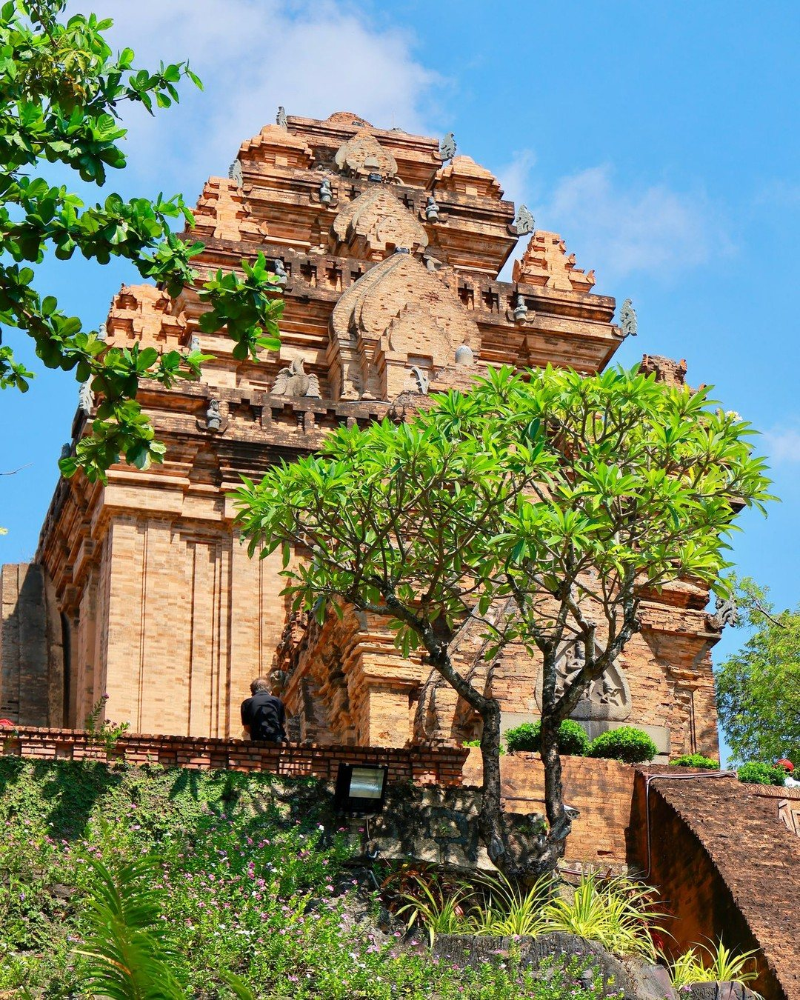
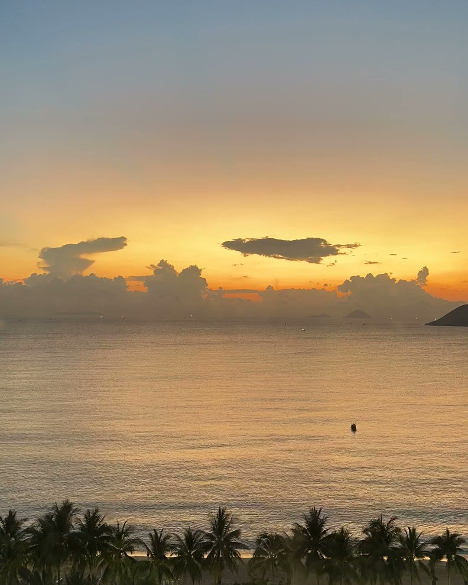
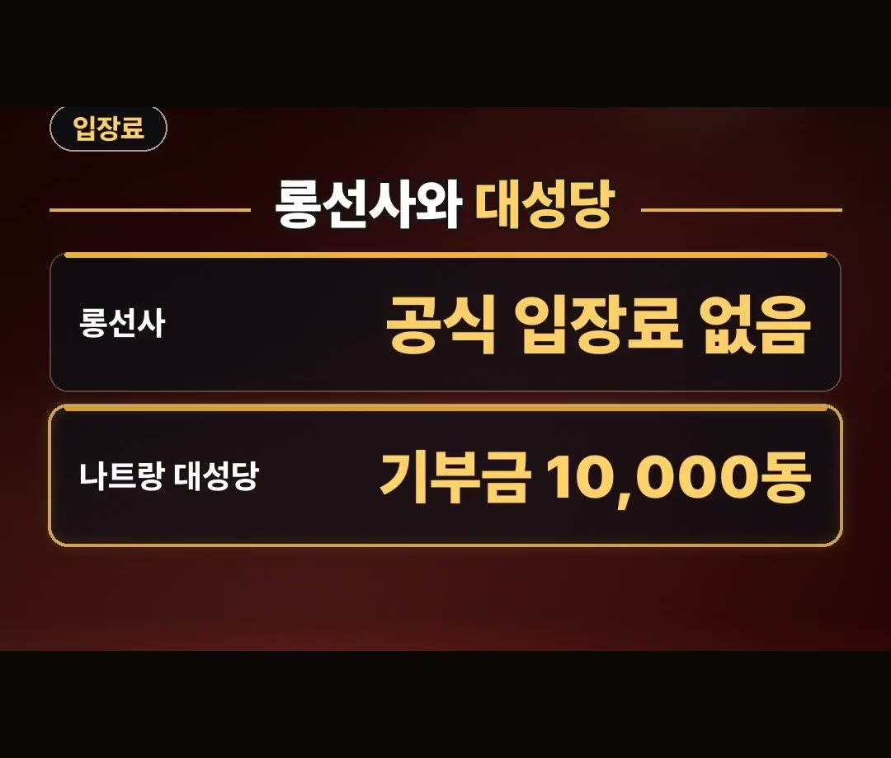
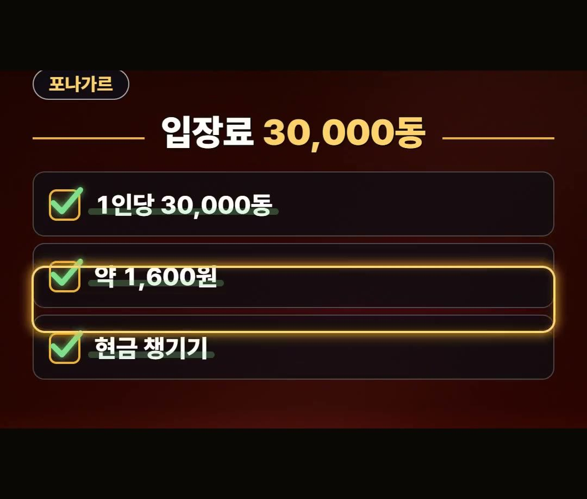
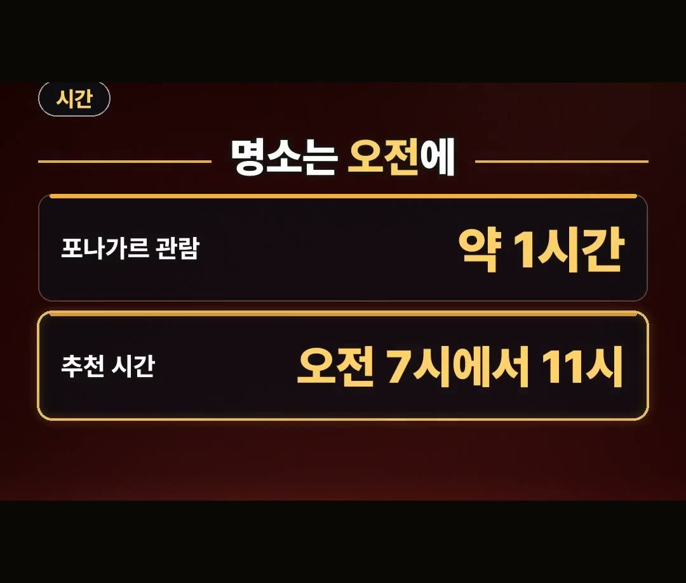
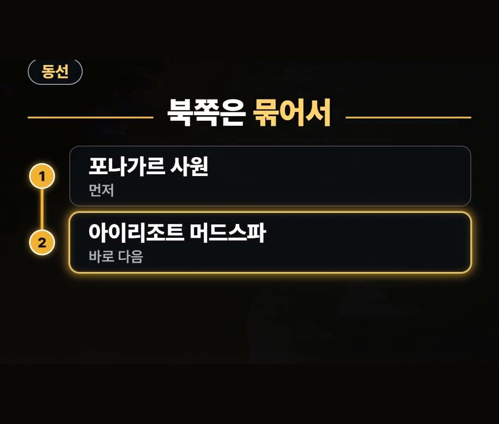
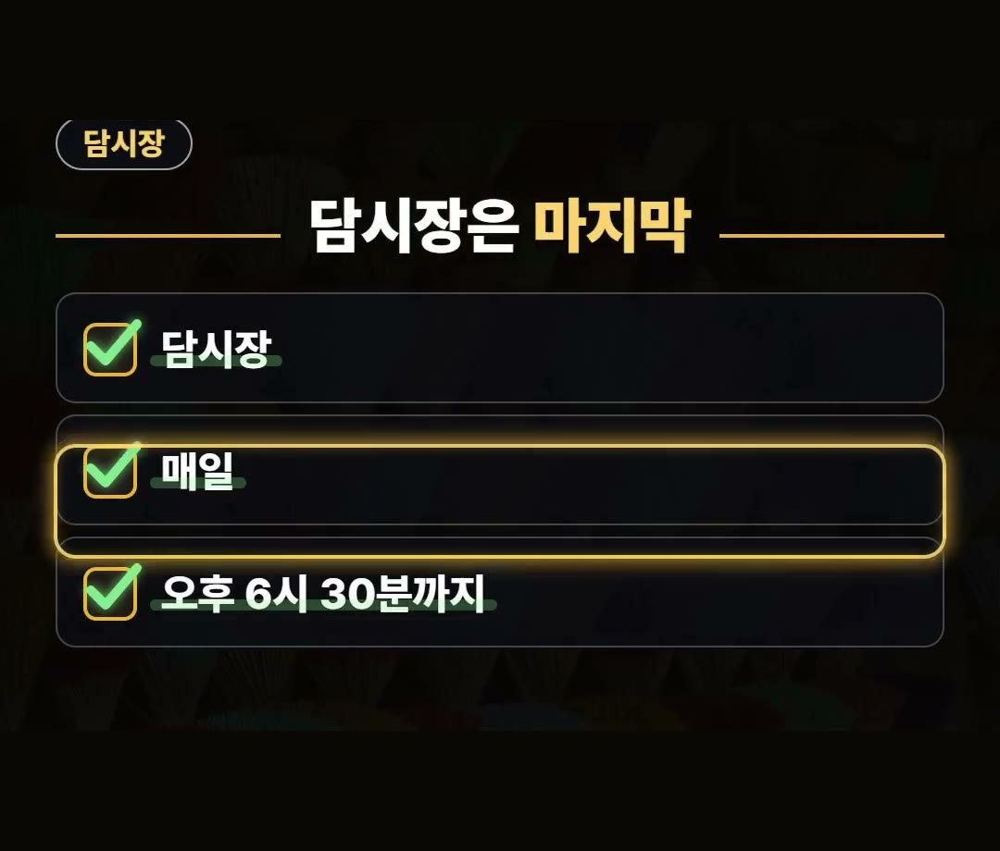

나트랑 여행코스 하루 동선과 주요 명소 입장료 정리
※ 이 글에는 제휴 링크가 포함되어 있으며, 링크를 통해 예약·구매하시면 일정 수수료를 받을 수 있습니다. (가격은 같습니다)
※ 이 포스팅은 쿠팡 파트너스 활동의 일환으로, 이에 따른 일정액의 수수료를 제공받습니다.

나트랑 여행코스를 짤 때 명소의 위치와 표 파는 시간을 따져 보지 않고 순서를 정하면, 머드온천 표를 사지 못하는 일이 생길 수 있습니다.
그래서 시내와 북쪽 명소를 하루에 도는 동선을 순서대로 정리해 봤어요.
롱선사와 나트랑 대성당에서 출발해 포나가르 사원, 아이리조트 머드스파를 거쳐 담시장으로 끝나는 순서입니다.
- 오전: 롱선사와 나트랑 대성당
- 이어서: 북쪽 포나가르 사원
- 바로 다음: 아이리조트 머드스파
- 마지막: 담시장
곳마다 입장료와 시간, 미리 알아 둘 점도 함께 적어 두었습니다.
포나가르 사원 입장료는 1인당 30,000동(약 1,600원)이고, 현금을 챙겨 가면 편해요.
명소는 한낮을 피해 오전 7시에서 11시 사이로 잡아 보세요! 💡

오전 동선 출발은 롱선사와 나트랑 대성당
나트랑 한낮은 뜨거워서 오전이 중요합니다.
한낮에 시내 명소를 돌면 더위에 고생하기 쉽습니다.
그래서 명소를 도는 일정은 오전에 시작하는 편이 좋습니다.

나트랑 여행코스의 출발지는 롱선사와 나트랑 대성당입니다.
두 곳 모두 공식 입장료는 없습니다.
다만 나트랑 대성당은 기부금으로 10,000동 정도를 내기도 합니다.
또 미사 시간에는 내부 관람이 제한됩니다.
대성당 안까지 보고 싶다면 이 점을 미리 알아 두세요.
- 롱선사: 공식 입장료 없음
- 나트랑 대성당: 공식 입장료 없음 (기부금 10,000동 정도를 내기도 함)

북쪽 포나가르 사원, 입장료와 둘러보는 시간
롱선사와 대성당 다음으로 갈 곳은 북쪽에 있는 포나가르 사원입니다.
- 입장료: 1인당 30,000동 (약 1,600원)
- 현금을 챙겨 가면 편해요

사원을 둘러보는 데는 약 1시간이면 충분합니다.
명소를 도는 시간은 오전 7시에서 11시 사이를 추천합니다.
앞에서 적은 것처럼 나트랑 한낮은 뜨겁기 때문입니다.
롱선사와 대성당, 포나가르 사원을 둘러보는 일정을 오전 쪽으로 당겨 두면 좋습니다.

포나가르 사원 바로 다음은 아이리조트 머드스파
포나가르 사원과 같은 북쪽에 아이리조트 머드스파가 있습니다.
이 동선에서 순서가 중요한 까닭이 바로 여기에 있습니다.
아이리조트 머드스파는 오후 늦게는 표를 팔지 않습니다.
다른 곳을 다 돌고 맨 마지막에 가려고 하면 머드온천을 놓칠 수 있어요.
그래서 포나가르 사원 바로 다음에 가는 순서로 짜는 것이 좋습니다.

나트랑 여행코스를 3박 4일로 짜든 4박 5일로 짜든, 시내와 북쪽 명소를 도는 하루는 이렇게 같은 방향에 있는 곳끼리 묶어서 움직이면 됩니다.
하루의 마지막은 담시장
하루 동선의 마지막은 담시장입니다.
머드스파를 먼저 들른 다음에 담시장으로 가는 순서입니다.
- 영업시간: 매일 오후 6시 30분까지
- 일찍 닫는 가게도 있어요

마지막 순서라고 해서 너무 늦게 가면 문을 닫은 가게를 만날 수 있으니, 이 시간을 기억해 두세요.
데이터는 이심으로 미리 준비해 두면 이동하면서 쓰기 편합니다.
이심 할인 정보는 글 아래쪽 여행사 할인 칸에 적어 두었어요.
정리
1. 출발은 공식 입장료가 없는 롱선사와 나트랑 대성당입니다. 대성당은 기부금으로 10,000동 정도를 내기도 하고, 미사 시간에는 내부 관람이 제한됩니다.
2. 다음은 북쪽 포나가르 사원입니다. 입장료는 1인당 30,000동(약 1,600원)이고 둘러보는 데 약 1시간이면 충분합니다.
3. 같은 북쪽의 아이리조트 머드스파는 오후 늦게는 표를 팔지 않으니 포나가르 사원 바로 다음에 갑니다.
4. 마지막은 매일 오후 6시 30분까지 영업하는 담시장입니다. 일찍 닫는 가게도 있습니다.
머드스파 시간은 공식 누리집, 나머지 입장료와 시간은 여행 안내 글 기준이니 떠나기 전에 다시 확인하세요.
최저가 예약 링크는 아래에 모아 두었어요.
지금 쓸 수 있는 여행사 할인
- 📶 해외 데이터는 이심으로 미리 · 마이리얼트립 마이심 「베트남 50% 1,200원~」 · 2개 이상 추가 할인 (마이심 화면 표시 기준 · 10/5 확인 · 값은 바뀔 수 있음)
※ 여행사 사정으로 조건이 바뀌거나 일찍 끝날 수 있어요. 예약 전에 여행사 화면에서 한 번 더 확인하세요. (2026-10-05 확인)
📘 무료 여행 가이드 전자책 모음 보기 (오사카 · 후쿠오카 · 타이베이 · 도쿄) ›
📌 2026년 10월 기준 정보예요. 가격은 환율·시기에 따라 달라질 수 있어요.
· 트립스토어 포나가르 사원 입장료·시내 명소 가이드(2026.07.11)
· 티스토리 포나가르 사원 방문 후기(2024.6.17)
사진·영상영상 화면: Pexels (Cá Bảo, Hoang NC, Hữu Thịnh 79, Laura Buzid, Thanh-Thang Phan, Toàn BDS)
사진: Pexels (Valeria Drozdova, 🇻🇳🇻🇳Nguyễn Tiến Thịnh 🇻🇳🇻🇳)